M01 Connecting rod checkpoint
新增授权：仅宽128、4 slices从2000轮续到累计4000轮；当前4000/4000，已完成。原4组的2000轮对照单独保留。
宽128 · 4 slices · 2000→4000轮续训
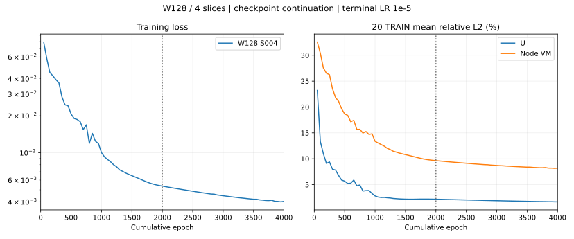
全量TS3 / MGN各20轮已完成；纯拉伸小模型消融已完成4/4组。FP64保持用户暂停。
20条纯拉伸 · 小参数TS3消融
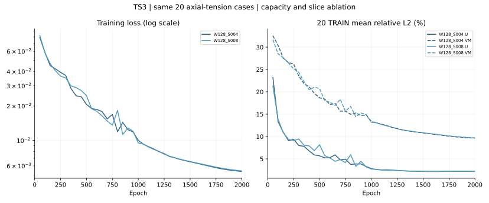
800条TRAIN · TS3与MGN固定20轮
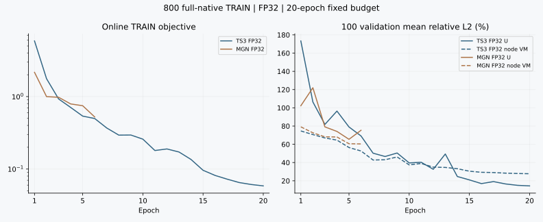
原20条混合载荷 · Overfitting loss
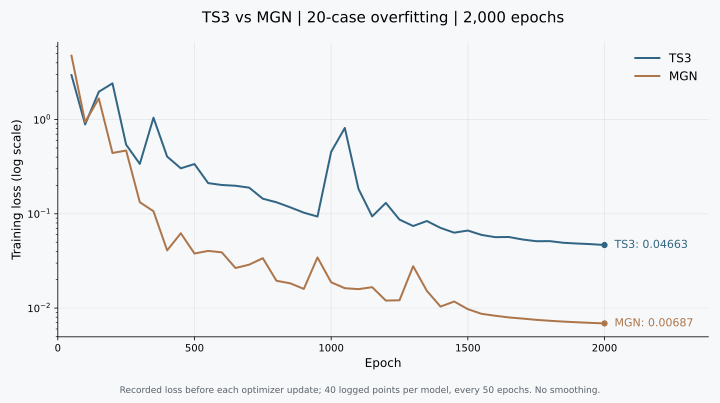
已交付 · 原20条混合载荷的slice / 容量消融
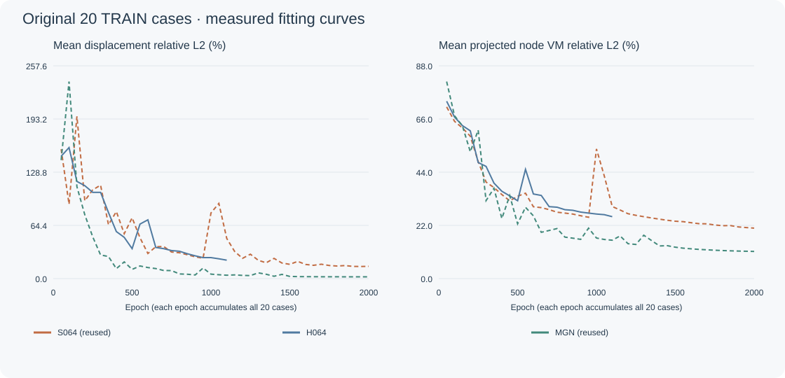
同20例TRAIN、相近参数、同4000轮：MGN均U 2.276% / VM 7.418%；TS3为1.676% / 8.145%。MGN应力误差更低，TS3位移误差更低；仅限本次20例拟合对照。
同20条纯拉伸 · TS3 / MGN参数匹配 · 4000轮
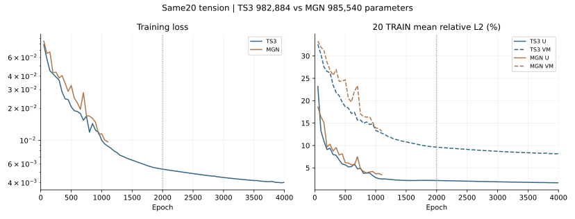
4000→6000轮续训：MGN 4825/6000轮；TS3 4000/6000轮（待训练）。同20条纯拉伸TRAIN、原节点、FP32/TF32、无AMP，保持LR 1e-5与Adam状态；4000轮对照保留。
同20条纯拉伸 · TS3 / MGN续训至6000轮
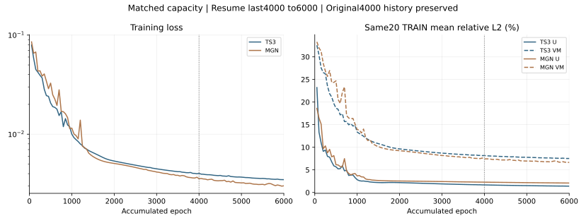
查看详情：离线PDF、数据统计、模型结果与审阅依据
0095 · 可自由查看的真值与预测模型
同一原始三维外表面，五个窗口分别为有限元真值、TS3预测、MGN预测、TS3误差、MGN误差；支持同步或独立旋转、缩放、平移，单窗放大，切换应力/位移、原网格与节点、裁切外表面，并读取选中的原节点值。固定展示4000轮预算：TS3实际best3950，MGN best4000；与进行中的6000轮续训分开。
0095全69,290原节点应力相对L2：TS3 21.947%、MGN 21.600%；位移为1.743%、2.283%。A节点原ID4076，真值应力530.415 MPa，TS3为1.128 MPa、MGN为2.389 MPa；透视标记只用于定位，原值见检查器。显示原二次边界面的27,730节点，使用已有保存预测，未新增推理或FE求解。
参数匹配模型 · 4000至6000轮独立续训
4000→6000轮续训：MGN 4825/6000轮；TS3 4000/6000轮（待训练）。同20条纯拉伸TRAIN、原节点、FP32/TF32、无AMP，保持LR 1e-5与Adam状态；4000轮对照保留。
MGN 985540参数，TS3 W128/S4 982884参数；各从原last.pt第4000轮恢复模型、Adam、调度器与Torch CPU/CUDA RNG，不从best重新训练。每轮全20例累积1更新，各新增2000轮/40000场/2000更新；原前4000曲线与全部源配置保持原样，无学习率重热、无误差门槛或早停。完成6000预算后导出最佳TRAIN checkpoint并如实列出实际best轮次；不作泛化结论。新增耗时单独记录，不把继承的前4000耗时算作新增耗时。
同20条纯拉伸 · MGN参数匹配记录
同20例TRAIN、相近参数、同4000轮：MGN均U 2.276% / VM 7.418%；TS3为1.676% / 8.145%。MGN应力误差更低，TS3位移误差更低；仅限本次20例拟合对照。
MGN为11步消息传递、latent96、两层隐藏MLP；独立同seed20261029初始化。使用TS3同一20个TRAIN几何、1,083,269原TET10节点、原有图边连接，无新增FE或投影、不读取validation/test。每轮累积全部20例后更新一次，共4000轮/80000场/4000更新。前2000轮使用原余弦LR（50轮预热、3e-4至1e-5），后2000轮保持1e-5，无Adam重置；与TS3实际4000轮学习率历史对齐。损失为等工况0.5×（U全向量相对L2平方＋投影节点VM相对L2平方），无误差门槛或早停。最终按原OF规则导出最佳TRAIN checkpoint并报告实际轮次。参数匹配通过宽度/深度配置完成，单seed结果不作为普遍架构或泛化结论。
实际训练用时：MGN 133.66分钟，TS3 102.29分钟；导出最佳TRAIN轮次分别为4000和3950。
宽128、4 slices · 独立续训记录
仅此组追加2000轮，累计4000轮；其余三组保持2000轮。保留原2000轮配置、曲线、权重与结论，在单独目录续训，不把不同训练预算混入原2×2对照。恢复模型、Adam、调度器及CPU/CUDA RNG；按原seed与累计epoch恢复工况顺序。末端学习率1e-5保持不变，无余弦重启/重新预热，不改数据、物理输入、模型容量、载荷或误差门槛。
续训状态、父断点与完整数据 · 20条续训指标 · 续训推理权重 · 实际续训曲线CSV
TS3 · 20条标准轴向拉伸 · 小模型消融
已完成 4/4 组。四组使用相同20个TRAIN几何；每组固定2000轮、全部原TET10节点。当前全量MGN完成且退出后，再独占GPU依次运行。
展开参数、逐例指标、权重与审阅依据
| 模型 | 层 | 宽 | slots | 参数 | 实际轮数 | 耗时(min) | 最佳checkpoint轮 | U均值/最差 % | 节点VM均值/最差 % |
|---|---|---|---|---|---|---|---|---|---|
| W128_S004 | 8 | 128 | 4 | 982,884 | 2000/2000 | 50.592 | 2000 | 2.178 / 2.841 | 9.636 / 22.618 |
| W128_S008 | 8 | 128 | 8 | 983,428 | 2000/2000 | 56.507 | 2000 | 2.209 / 2.860 | 9.707 / 22.560 |
| W192_S004 | 8 | 192 | 4 | 2,191,588 | 2000/2000 | 69.106 | 2000 | 1.665 / 2.260 | 8.617 / 22.097 |
| W192_S008 | 8 | 192 | 8 | 2,192,388 | 2000/2000 | 52.585 | 2000 | 1.610 / 2.134 | 8.426 / 22.048 |
W128_S004 推理权重 · W128_S008 推理权重 · W192_S004 推理权重 · W192_S008 推理权重 · per_case.csv · curves.csv
数据、训练与审阅口径
用户确认沿用既有标准tension：原大头约束、小头销孔轴向拉伸，无厚度偏载、无惯性；没有重定义两端独立外拉边界，也没有新增有限元求解。种子20261029从120个不同TRAIN拉伸几何中固定选20个，总计1,083,269原节点。不按响应误差挑样，不使用validation/test标签。
固定8层8头，宽128/192与slots4/8构成2×2对照。同宽度共享同形状初始权重，4-slot使用8-slot初始化的前4行；不同宽度按同seed独立初始化。沿用旧OF的AdamW、学习率和全20工况梯度累积更新配方，FP32、TF32允许、无AMP。没有误差门槛或误差早停；训练满2000轮，报告最佳训练checkpoint的实际轮次和误差。
这是同20条纯拉伸TRAIN的容量/slot消融。此前混合载荷20条属于不同数据构成，保留历史结果，不能直接当作本实验同数据大模型基线。loss为等工况平均0.5×（位移向量相对L2平方＋投影节点VM相对L2平方），未作曲线平滑。批量模型静态渲染仍需先审核参考图。
完整配置、逐轮数据与核验记录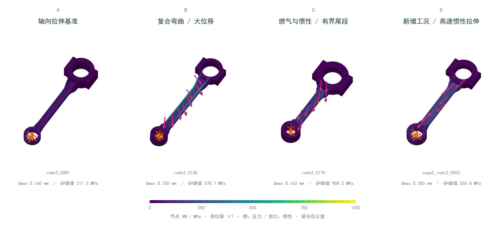
离线报告与来源
1000条数据的口径
1000＝985条原结果＋15条用户授权新工况。原15个未收敛ID排除且保留；不是原1000全部收敛。常规组900、极端组100；150个独立几何，TRAIN/VALIDATION/TEST为800/100/100条，对应120/15/15个互不重叠几何。
1000例均接受十个原载荷目标至1.0，并通过身份、有限性、正J、材料与平衡检查。完整J2及非零PEEQ共27例，其中5例使用已验证有界尾段。最大自由残差1.99994e-7、最小J为0.986045。GPU/CPU为468/532。未逐例认证稳定性或解的唯一性，亦未做实验验证。
最大位移中位数0.136 mm、P95为2.553 mm、最大17.375 mm；原GP峰值VM中位数171.33 MPa、P95为556.85 MPa、最大958.24 MPa。节点显示应力是原四GP单元最大值经参考体积加权投影，不能与原GP峰值混称。
补充数据与结论
旧20条混合载荷与新20条纯拉伸是不同的几何/载荷子集，不能据跨实验误差直接推断减参带来的改善。原7组消融、180行逐例指标、8组960条slice诊断均已交付，不重跑。
slice诊断显示：低节点熵并不等于空间分工；原32/64 slices的末层分配仍高度相似。这是诊断证据，不是架构失效的因果证明。
原容量消融配置、曲线与权重 · 原180行逐例指标 · slice诊断 · 960条逐头诊断 · 64 slices交互查看 · 原20条OF loss CSV · loss来源
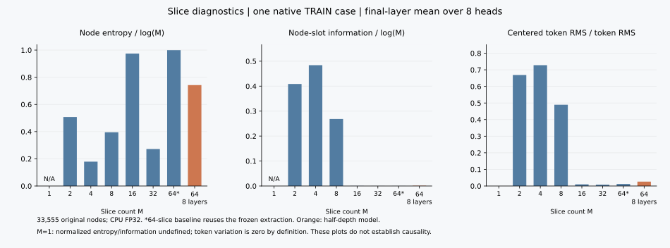
MGN · 全训练集同预算对照
已完成20/20轮，当前轮0/800条，活动用时172.4分钟。固定第20轮100条validation：U平均18.375%，节点VM平均31.309%。
用户要求将TS3 FP64断点暂停，优先运行MGN。MGN为15步消息传递、宽288，共11,760,196参数；沿用原M01预设。800条TRAIN、100条validation、100条test几何隔离；每轮完整800条、累计20轮，每8条工况累积一次更新。使用原TET10全节点和真实网格连接，不采样节点。
与已完成TS3 FP32共用数据、训练归一化、工况顺序、损失、AdamW和学习率配方，均关闭AMP/TF32。MGN按相同种子独立初始化，不能与TS3共享不同形状的权重。MGN额外接收原网格连接，两种模型参数量略有差异。100条validation逐轮记录；固定第20轮，不按验证误差选best，不读test标签，不设误差通过线或早停。
MGN配置与实时结果JSON · 实际epoch CSV · 第20轮推理权重 · 100条验证指标 · 完整计时与TS3对照JSON
执行与计时口径
最大TRAIN网格先做一次无优化更新的完整前后向预热，不计入20轮。CUDA前后向、优化器、训练wall、验证、保存和排队分别记录。首轮实际完成后再估算总耗时；此前TS3精度实验与20条小样本速率不充当MGN全量测速。TS3 FP64断点保留，未经用户授权不自动恢复。
固定第20轮 · 同数据对照
| 模型 | 验证U均值 | 验证节点VM均值 | 训练wall(min) | GPU前后向(min) | 验证(min) | 保存(min) | 活动计时(min) | 峰值allocated(GiB) |
|---|---|---|---|---|---|---|---|---|
| TS3 FP32 | 14.408% | 27.738% | 82.05 | 74.90 | 4.42 | 0.78 | 87.62 | 5.007 |
| MGN FP32 | 18.375% | 31.309% | 163.80 | 157.04 | 6.97 | 1.07 | 172.38 | 8.225 |
本固定预算下TS3的两项验证均值更低。MGN训练wall为TS3的1.996倍，GPU前后向为2.097倍。各计时器保留独立实测值；没有累计排队计数，不用不同计时器相减倒推排队或I/O。
本地 TS3 · FP32 / FP64 速度对比
用户已暂停FP64：完成6轮，下一轮200/800条，625次更新。断点已保存，MGN同预算对照已完成。TS3 FP64断点保留，新纯拉伸消融按队列继续。此前Sockeye部署包保留，未提交任何远端作业。
TS3为16层、宽320、8头、64 slices，共11,882,756个可训练参数。两档分别从相同FP32初始权重开始，FP64将这些值精确提升为双精度；样本顺序一致。每档20个完整epoch，每轮全部800条TRAIN，每条保留原TET10全节点；每次优化更新累积8条。100条validation用于记录误差，100条test在本次测速中不读。
| 精度 | 已完成epoch | 平均训练轮耗时 | 平均每场GPU前后向 |
|---|---|---|---|
| FP32 | 20 / 20 | 246.151 s | 0.2809 s |
| FP64 | 6 / 20 | 3823.173 s（前6轮） | 4.8437 s（前6轮） |
两档均关闭AMP与TF32；FP64的模型、输入、目标、损失和梯度均保留float64。CPU小规模模块类型检查已完成，不能作GPU速度或显存结论。每档正式计时前仅做一次最大原网格前后向预热，不更新权重、不计入20轮。
CUDA事件单独记录前后向和优化器时间；训练整轮时钟包含读数、归一化及数据传输，验证、checkpoint和排队时间另计。输入缓存沿用R06已知特征的float32存储，两档按同一训练集统计归一化后转换为各自精度。无误差通过线或误差早停。用户已要求断点暂停FP64并优先运行MGN；不自动续训。完整优化器、随机数状态和工况游标已保存。
AI审阅：精度比较固定了模型容量、初始化、样本顺序和训练预算；速度应区分纯计算与端到端读数开销。不能把CPU类型检查当GPU测速，也不能把20轮精度实验当作完整泛化结论。M01保持进行中。离线PDF保留此前的数据与小样本拟合阶段记录，最新执行计划以本节为准。
当前精度实验状态与口径FP32最终100条validation：平均U相对L2为14.408%，投影节点VM为27.738%。指标对应固定第20轮权重；未读取test标签。
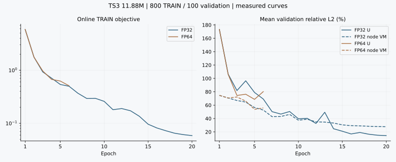
既有本地固定预算训练结果
两模型各1/5/20条嵌套TRAIN，独立初始化，各2000轮全组梯度累积；每条均经历2000次前后向。56维纯已知物理输入，原全节点TET10；输出Uxyz和节点VM。归一化只由各自TRAIN子集计算，无ID或真值响应作为输入，validation/test未参与拟合。不设误差通过线。
TS3共7,626,372参数；MGN共9,298,436参数。两者容量及计算成本不同，六组记录训练段合计23,322.66秒，不含FE生成与暂停空档。下表误差单位为百分数，均为保存预测对原节点标签的相对L2；不作泛化结论。
| 模型 | TRAIN条数 | U均值/最差% | 节点VM均值/最差% | 训练分钟 | 选用epoch |
|---|---|---|---|---|---|
| TS3 | 1 | 0.851 / 0.851 | 4.490 / 4.490 | 5.76 | 1950 |
| TS3 | 5 | 3.850 / 9.510 | 13.021 / 15.614 | 29.43 | 2000 |
| TS3 | 20 | 14.875 / 51.994 | 20.883 / 35.960 | 120.09 | 2000 |
| MGN | 1 | 0.437 / 0.437 | 1.851 / 1.851 | 7.43 | 2000 |
| MGN | 5 | 1.035 / 1.376 | 4.455 / 4.990 | 45.03 | 2000 |
| MGN | 20 | 2.117 / 4.089 | 11.238 / 15.898 | 180.96 | 2000 |
TS3单条保存预测来自第1950轮的最佳训练checkpoint，其余五组来自第2000轮；六组实际都训练满2000轮。完整优化器/RNG checkpoint保留本地，推理权重与逐例误差在R07/R08。
选图与AI审阅记录
代表图有目的地覆盖基准拉伸、大位移复合弯曲、非零塑性尾段和新增工况，不是均匀随机样本。四例几何和载荷不同，不能把场差解释成单一载荷因素的因果效应。原节点表面不重网格；光照仅辅助形状显示，位移倍数1，力箭头方向来自原载荷，长度仅示意。
同例对比使用extreme_rodv2_0130__combined_bending，由既有TS3二十条联合相对误差最大规则确定，未按MGN表现挑图。真值、TS3和MGN共享同行色阶，负应力预测未通过裁零掩盖；节点投影不等于直接GP预测。
AI审阅结论：本次配方下MGN在三档训练集上的平均U/VM误差均低于TS3；应力仍有偏差，TS3多工况大位移响应尚未充分拟合。该结果不是架构极限、跨几何泛化或结构安全认证。全量TS3 FP32与MGN固定20轮均已完成；新纯拉伸4组消融仍在进行，FP64保持用户暂停。
评论与审阅
更新记录
FP32预测场：代表图、最差工况与100条逐例指标
FP32第20轮 · 原节点预测结果
800条TRAIN训练20轮，100条validation的平均位移相对L2为14.41%，投影节点VM为27.74%。下列三张是验证集中综合误差中位、位移最差和VM最差的参考图；图中每个工况都使用完整原节点计算误差，没有裁剪困难区域。
| 选择 | 工况 | U相对L2 | 节点VM相对L2 |
|---|---|---|---|
| 综合误差中位工况 | normal_rodv2_0050__tension_skew | 10.14% | 28.45% |
| 位移误差最差工况 | normal_supp2_rodv2_0135__tension_new_bias_m025 | 90.81% | 28.72% |
| 节点VM误差最差工况 | normal_rodv2_0123__compression_skew | 66.62% | 43.32% |
原GPU验证100条逐例指标 · CPU全原节点预测逐例指标 · 预测来源与参考图说明
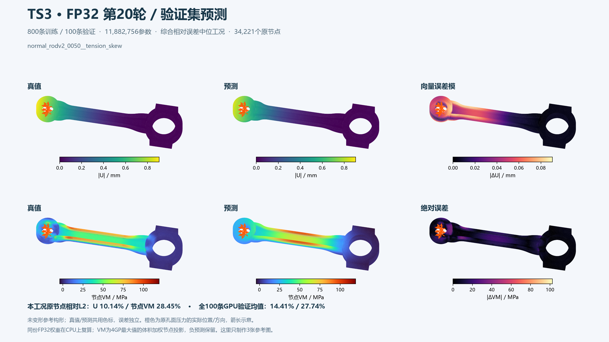
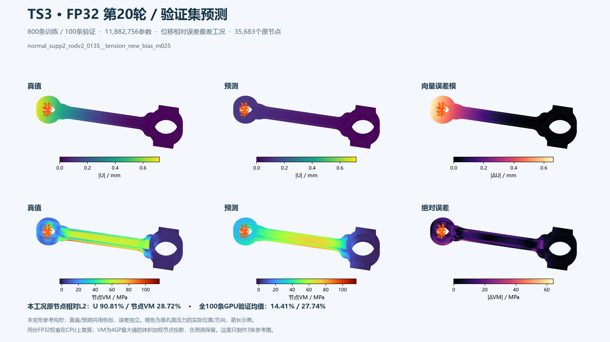
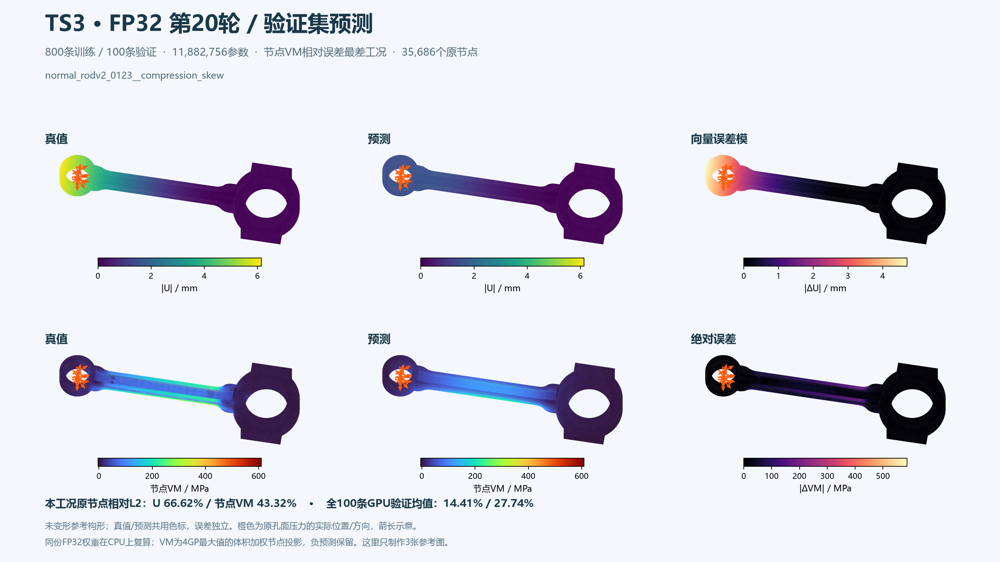
这些是同份第20轮FP32权重的CPU复算场，可能有微小CPU/CUDA算术差异，均保留在数据中。最差位移工况仍有90.81%的相对误差；不能只看平均值或代表图认定全部预测准确。100条test标签未读。